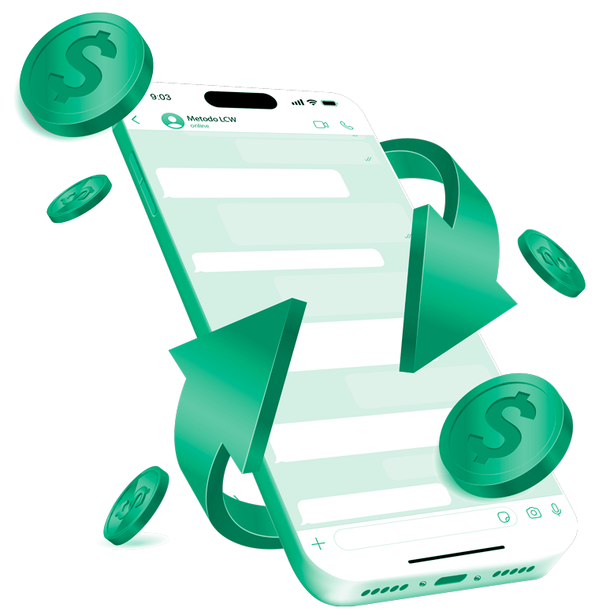

<section class="page">
  <div class="container">
    

    <div class="info">
      <h3 class="f-41"> Você tem </h3>
      <h1 class="f-67"> dificuldade <br> em vender </h1>
      <h3 class="f-32"> e fechar clientes pelo WhatsApp? </h3>

      <p class="f-17">
        Uma pesquisa realizada pelo Panorama Mobile Time revelou que o 99%
        das mensagens que são enviadas pelo WhatsApp são abertas por quem
        recebeu. Ou seja, a cada <span class="f-17 text-marking">100 mensagens que você envia 99 são lidas</span>. A
        pergunta é: Tem cliente que não te responde? Ou não fecha com você?
        Se sim, a verdade é que você não está conseguindo ser atrativo o
        suficiente. Uma das maiores dificuldades é sobre atendimento, como
        conduzi-lo até a venda e saber o que responder. Então, este treinamento
        te ensina todo o conceito de como vender pelo WhatsApp com <span class="f-17 text-marking">scipts de
        alta conversão</span> que já faturaram mais de 5 milhões de reais.
      </p>

      <a href="https://api.whatsapp.com/send/?phone=5521979744975&text=Ol%C3%A1%2C+quero+falar+sobre+o+M%C3%A9todo+LCW&type=phone_number&app_absent=0" target="_blank" title="Suporte" class="animation-btn" mat-raised-button color="primary" rel="noopener">
        CLIQUE AQUI E FALE COM NOSSO SUPORTE
      </a>
    </div>
  </div>
</section>
